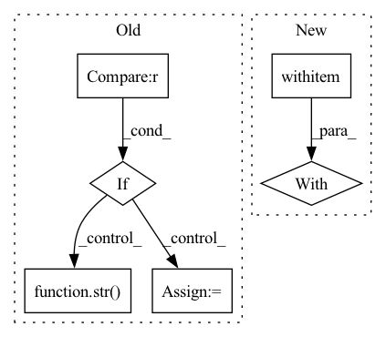

Pattern ID :4750
Before Change
op, j = genotype[k]
if j == 0:
u = "c_{k-2}"
elif j == 1 :
u = "c_{k-1}"
else:
u = str( j-2)
v = str(i)
g.edge(u, v, label=op, fillcolor="gray")
g.node("c_{k}", fillcolor="palegoldenrod")After Change
i = 0
for node in range(n_nodes):
g.node("add"+str(node), fillcolor="lightblue")
with g .subgraph() as s:
s.attr(rank="same")
for _ in range(2):
op, x_i = genotype[i]
s.node(str(i), label=op, fillcolor="ghostwhite")In pattern: SUPERPATTERN
Frequency: 3
Non-data size: 6
Instances Fragment ID: 16803492
Project Name: woodywff/nas_3d_unet
Commit Name: a545a3bf9ef55ec3f9d7881f84079f44027753e6
Time: 2020-04-07
Author: woodywff@aliyun.com
File Name: helper.py
M Class Name: AnonimousClass
N Class Name: AnonimousClass
M Method Name: visualize(4)
N Method Name: visualize(4)
M Parent Class:
N Parent Class:
M File Name: helper.py
N File Name: helper.py
M Start Line: 31
M End Line: 70
N Start Line: 34
N End Line: 71
Before Change
try:
for img in downscaled_images:
if "_resized" in img :
result_path = (img.replace("_resized.png","") +
"_" + AI_model +
"_x" + str( upscale_factor) +
".png")
else:
result_path = (img.replace(".png","") +
"_" + AI_model +
"_x" + str(upscale_factor) +
".png")After Change
tiles = slice_image(img, num_tiles)
// 4) upscale each tiles
with torch .no_grad():
for tile in tiles:
tile_adapted = adapt_image_for_deeplearning(tile.filename)
tile_adapted = tile_adapted.to(device, non_blocking = True)
tile_upscaled = model(tile_adapted) Fragment ID: 16803494
Project Name: djdefrag/qualityscaler
Commit Name: 66cef0855cfbe41b27938a88cd316575f61f5507
Time: 2022-05-04
Author: jjluca96@gmail.com
File Name: QualityScaler.py
M Class Name: AnonimousClass
N Class Name: AnonimousClass
M Method Name: torch_AI_upscale_video_frames(4)
N Method Name: torch_AI_upscale_video_frames(4)
M Parent Class:
N Parent Class:
M File Name: QualityScaler.py
N File Name: QualityScaler.py
M Start Line: 620
M End Line: 673
N Start Line: 416
N End Line: 465
Before Change
try:
for img in downscaled_images:
if "_resized" in img :
result_path = (img.replace("_resized.png","") +
"_" + AI_model +
"_x" + str( upscale_factor) +
".png")
else:
result_path = (img.replace(".png","") +
"_" + AI_model +
"_x" + str(upscale_factor) +
".png")After Change
tiles = slice_image(img, num_tiles)
// 4) upscale each tiles
with torch .no_grad():
for tile in tiles:
tile_adapted = adapt_image_for_deeplearning(tile.filename)
tile_adapted = tile_adapted.to(device, non_blocking = True)
tile_upscaled = model(tile_adapted) Fragment ID: 16803495
Project Name: djdefrag/qualityscaler
Commit Name: 66cef0855cfbe41b27938a88cd316575f61f5507
Time: 2022-05-04
Author: jjluca96@gmail.com
File Name: QualityScaler.py
M Class Name: AnonimousClass
N Class Name: AnonimousClass
M Method Name: torch_AI_upscale_multiple_images(4)
N Method Name: torch_AI_upscale_multiple_images(4)
M Parent Class:
N Parent Class:
M File Name: QualityScaler.py
N File Name: QualityScaler.py
M Start Line: 563
M End Line: 616
N Start Line: 364
N End Line: 414